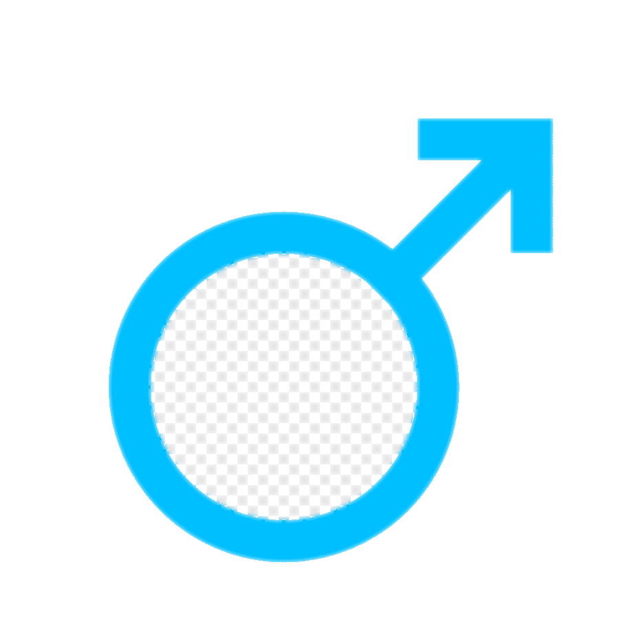
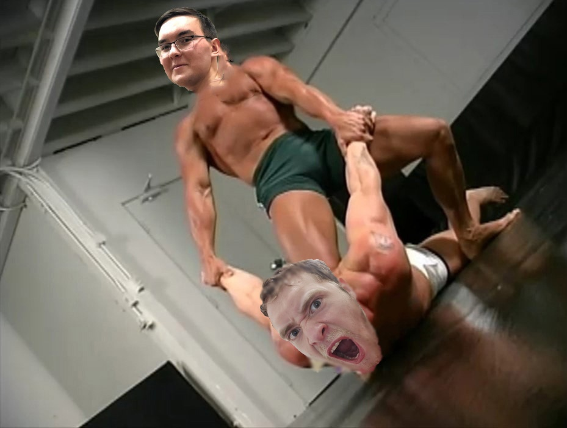
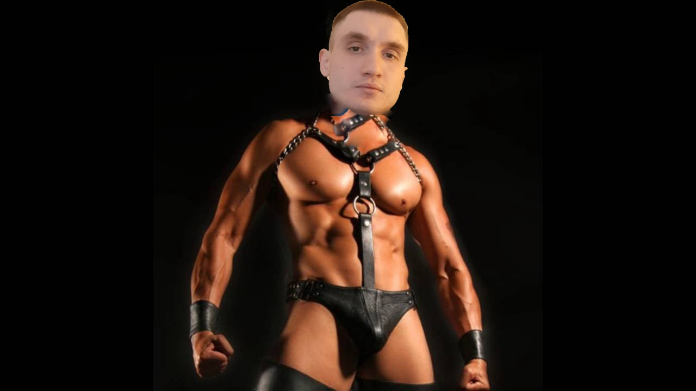
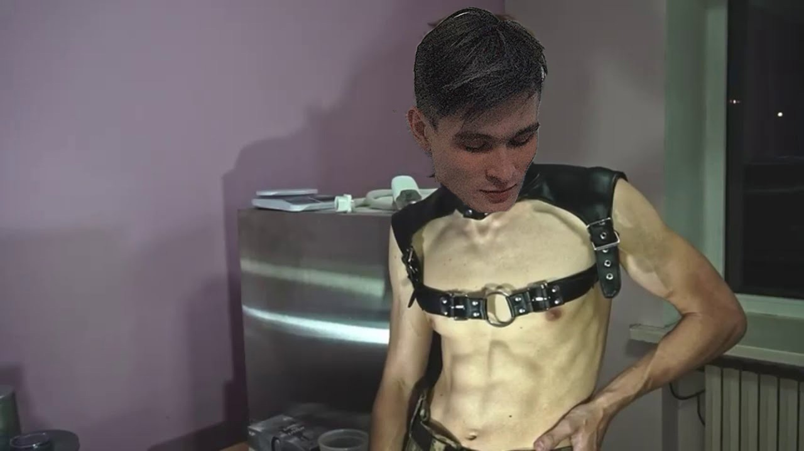

Когда же смениться босс бани?Все мы знаем, что самым главным боссом бани остается Артур, но его главный конкурент Александр хочет отомстить за прошлое свое поражение и охотится на его ASS. Кстати, мы имеем фотографию с последнего боя между Артуром и Александром Также имеются главные конкуренты в виде Дмитрия и Ильфата |
|
|---|---|
| Дмитрий | Ильфат |
|  |  |
Так кто же займет место Артура? Это мы узнаем на следующем собрании Гачисквада |